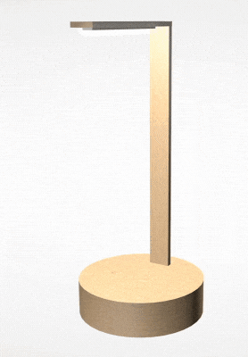
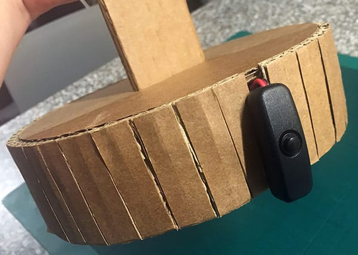
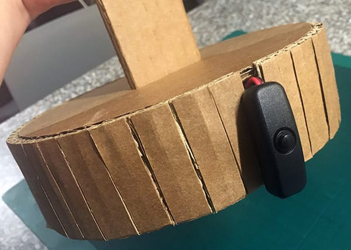
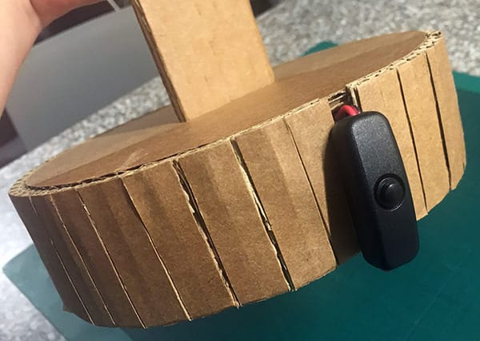

The project Alternative Transactional Lamps imagines a world where there are no simple on/off switches. What if one had to spend time with an object and learn how interact with it? The habitat for these lamps is a world full of friction - where nothing works as expected. Every technological interaction takes times, patience, and problem solving. What if all interactions were transactional?
The Seduction of Technological Devices
The devices we use are always available for us (unless they need to be charged). With a simple touch of a button, hundreds of apps, connective technologies, media, and games are ready to be enjoyed. While we desire human contact, digital alternatives offer a seductive uncomplicated and non- transactional solution. We are lonely but fearful of intimacy (Turkle, p. 1). Interpersonal relationships are messy - fraught with uncertainty and complex emotions. Technology offers dependable and consistently available interaction. It is easier to check social media than it is to call a friend. This has resulted in more aspects of our lives becoming digital, which has subsequently reduced opportunities for social contact (Allen). Digital interactions offer inauthentic and unfulfilling ways of communicating which contributes to a perceived sense of loneliness. We also have less physical contact with each other which is imperative to us as a social species.
For this project, I imagined a future where devices require time and effort to be used. I wanted to add the illusion of transaction - where the user must problem solve the interaction and then is ultimately more fulfilled when the device turns on or off. This project is simultaneously humorous and frustrating and is intended to stimulate discussion and reflection about the implications of ever-ready digital experiences all that we take for granted.
First Idea: Rotating Neck Lamp

My first idea was to make a lamp that would move away from a person as it was approached. In order to keep the aesthetics of a lamp and have the movement be surprising, I felt the best way to achieve that would be to rotate the neck of the lamp. I did some experimentation with a PIR motion detector. Attaching it to the object that was moving was not the best idea!
I figured out a way to make a prototype using an Ultrasonic Distance Sensor to detect motion and a servo to rotate the arm. Once weight was placed on the servo however, there were several issues including noise, flashing of the LEDs, and general instability. I decided to pursue a different direction.
Process
The next two ideas I had were for the audio triggered lamp and the motion triggered lamp. I knew I needed a way to count the number of interactions. I began by testing a simple circuit with a pushbutton and an LED. I used this tutorial from Arduino.org on State Change Detection. The code allows for a trigger to advance a counter and then conditional statements can be used to trigger events after a certain number of 'pushes". I exchanged the physical pushbutton for input from an ultrasonic distance sensor and a volume received from a small microphone.
For the prototypes I used single walled cardboard to play with methods of building a familiar shape of a lamp out of cardboard. Once I established the best way to build the lamps, I rebuilt them with double walled cardboard so they would withstand being transported. I found the circuits and boards a little tricky to hide at the bottom of lamps but I also did not want huge bases. It all worked out thanks to velcro, double sided artist tape, and plasticine.

Outcomes
Although I had to abandon my first idea, I am happy with the "final" two lamps. I think these could be expanded upon in the future and made look more professional and intentional.
Allen, Chris. “How the Digitalisation of Everything Is Making Us More Lonely.” The Conversation, 2 May 2018, theconversation.com/how-the-digitalisation-of-everything-is-making-us-more-lonely-90870. Accessed 13 May 2018.
Malpass, Matthew. Critical Design in Context: History, Theory, and Practices. Bloomsbury Academic, an Imprint of Bloomsbury Publishing Plc, 2017. Digital. Kindle Edition.
Ratto, Matt. “Critical Making: Conceptual and Material Studies in Technology and Social Life.” The Information Society, vol. 27, no. 4, 2011, pp. 252–260
Turkle, Sherry. Alone Together: Why We Expect More from Technology and Less from Each Other. Basic Books, 2017.
Suchman, Lucy. Human-Machines Reconfigurations: Plans and Situated Actions. Cambridge University Press, 2009.


 
